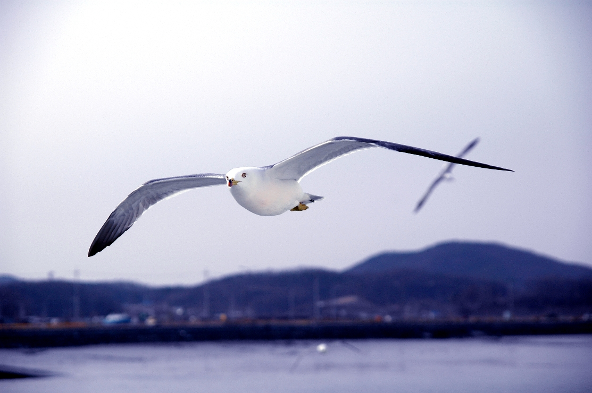

부산의 상징물
부산을 대표하는 자연·도시 상징물로, 시화·시조·시어 및 마스코트를 소개합니다.
시화 · 시목
진홍색 동백꽃과 진녹색 잎의 대비는 부산의 바다와 시민의 정서를 상징합니다.
지정: 1970년시조

먼 바다를 끈기 있게 나는 모습은 강인한 부산 시민의 정신을 나타냅니다.
지정: 1978년시어
역동성과 속도를 바탕으로 한 해양수산도시 부산을 상징합니다.
지정: 2011년마스코트
태양과 바닷물결을 모티브로 한 부비와 소통을 대표하는 부기
부비 지정: 1995년 | 부기 탄생 : 2021년상징물 한눈에 보기
| 구분 | 상징물 | 의미 |
|---|---|---|
| 시화·시목 | 동백꽃 / 동백나무 | 바다, 시민정서, 젊음 |
| 시조 | 갈매기 | 끈기, 강인함 |
| 시어 | 고등어 | 역동성, 속도 |
| 마스코트 | 부비&부기 | 꿈, 희망, 미래도시, 소통 |